Musisz mieć ukończone główne zadanie Ashes Of The Damned. Zadanie odblokowuje się na rundzie 20+
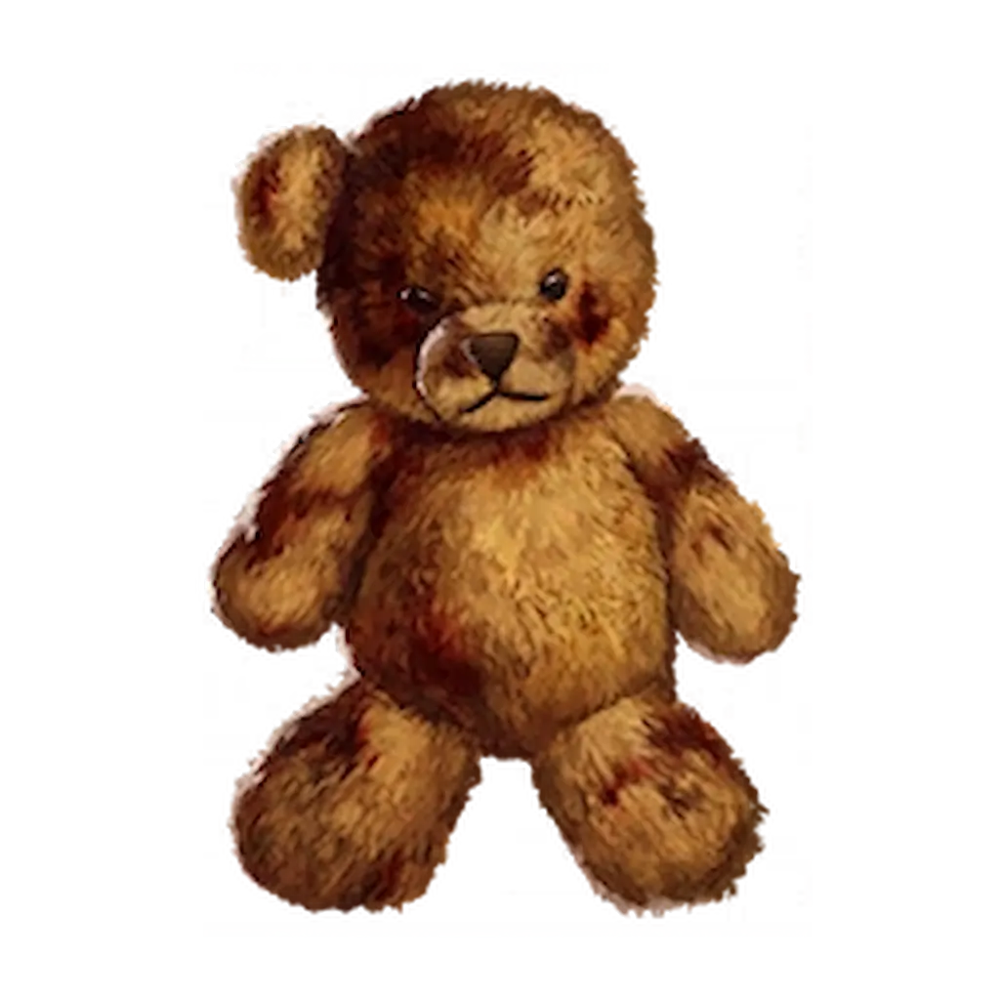
KROK 1: Niezbędne Narzędzia:
Zasłona Eteryczna: Tylko podczas jej trwania zobaczysz ukryte pluszaki.
Rękawica Nekrofluidu: Musisz jej użyć, aby przyciągnąć do siebie misie.
KROK 2: Poszukiwanie 10 Mr. Peeks:
Musisz odnaleźć i „złapać” 10 niebieskich królików Mr. Peaks rozsianych po mapie. Aktywuj Ether Shroud, strzel w królika rękawicą i przyciągnij go do siebie.
Mr.Peeks możesz zbierać w dowolnej kolejności poza ostatnim który jest na Exit 115:
Blackwater Lake: Wewnątrz kabiny, w toalecie.
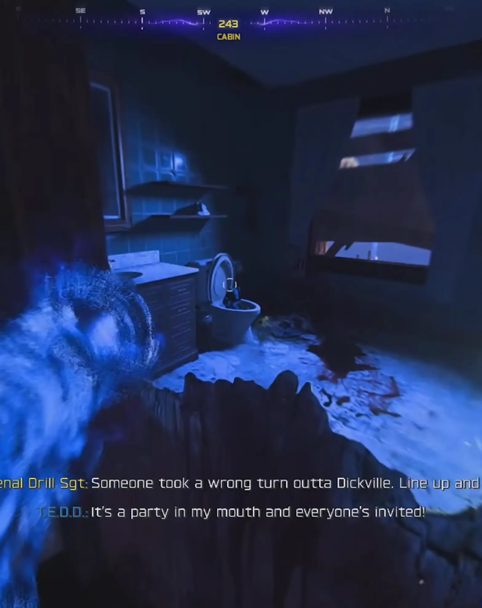
Blackwater Lake (Lost Cabins): Nad stosem drewna przy jednej z chat.
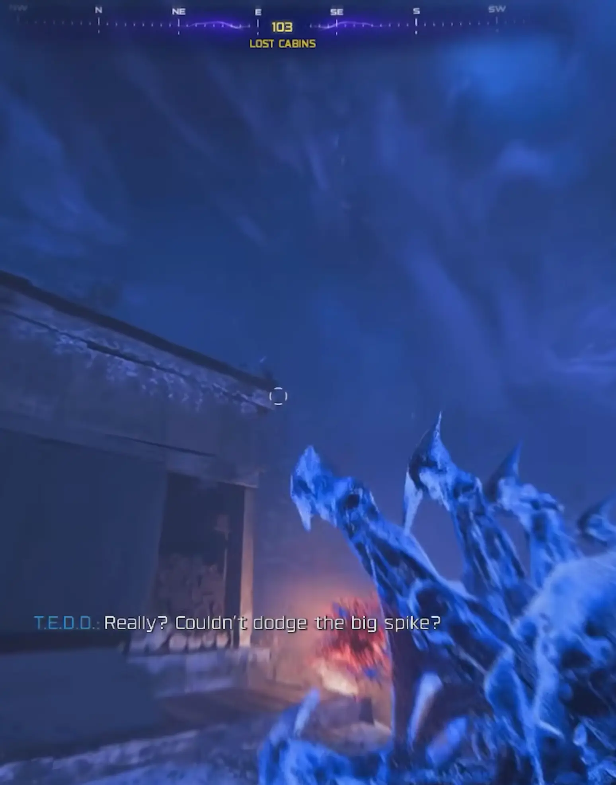
Grounded Ship (Uziemiony statek): Bezpośrednio na statku.
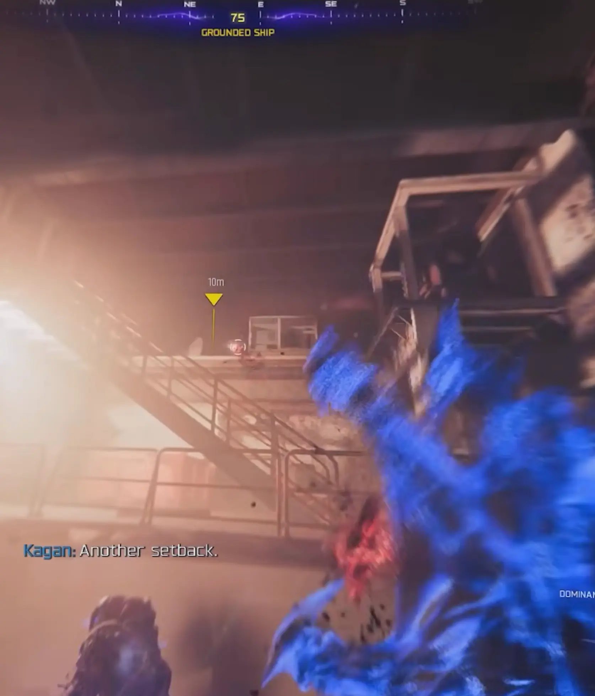
Van Dorn Farm: Na szczycie silosu.
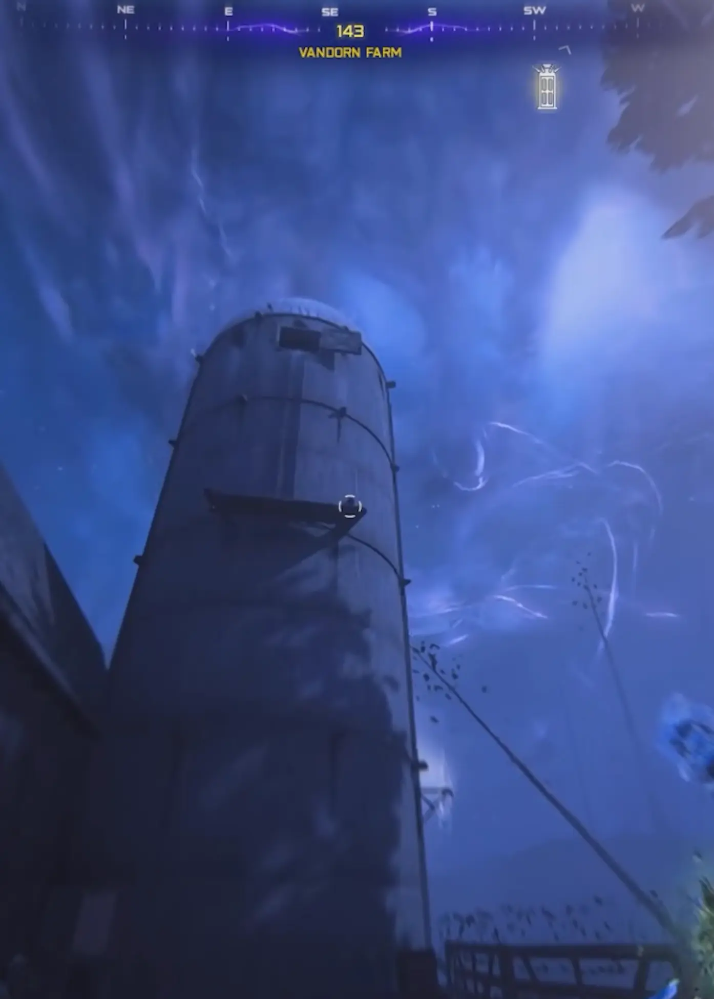
Ashwood: Nad dziurawym, zniszczonym dachem.
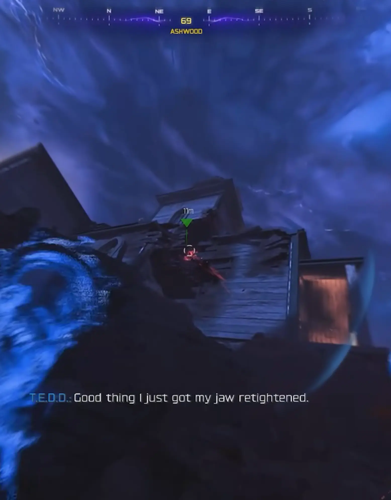
Ashwood (Rabbit Alley): Na samym tyłach klubu nocnego.
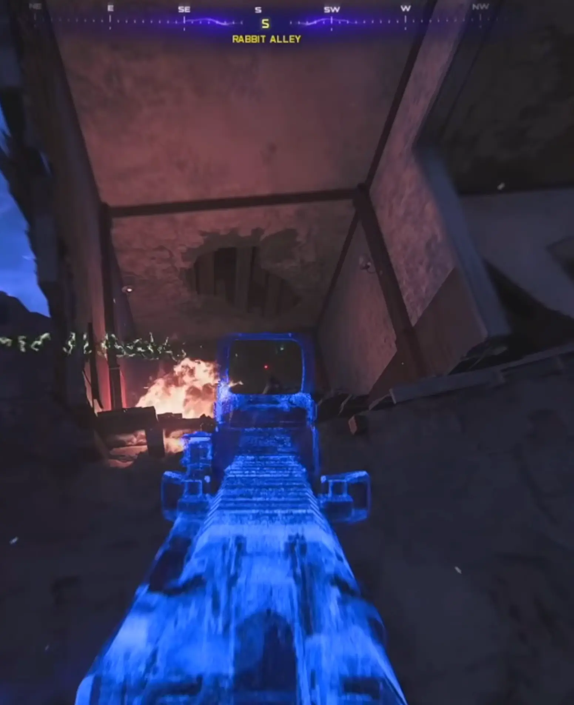
Janus Towers Plaza (Spawn): Na filarze przejścia w stronę Blackwater Lake.
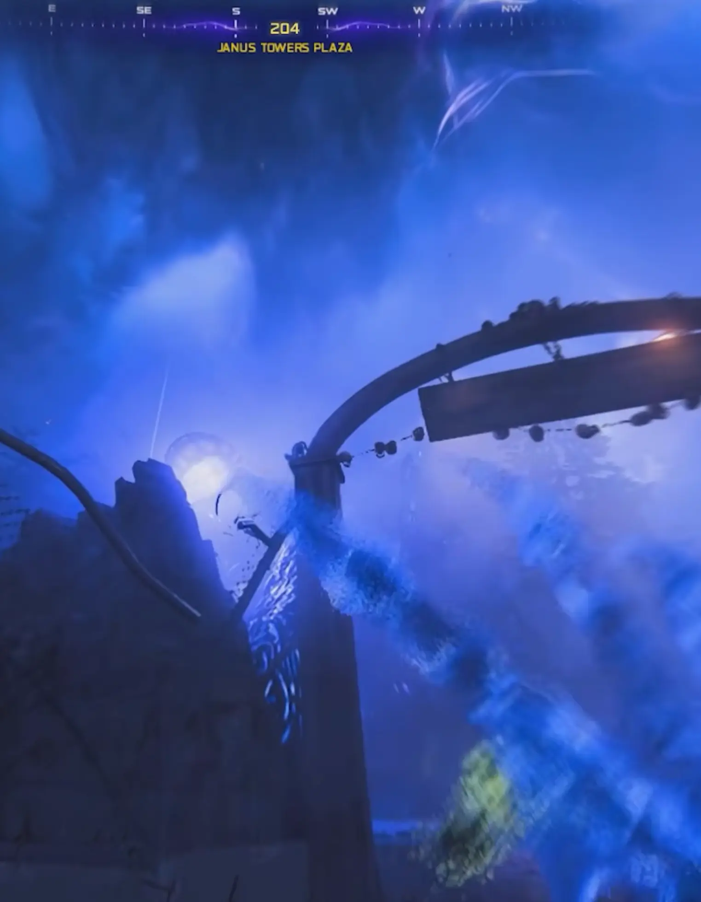
Zarya CosmoDrome: Na szczycie słupa wysokiego napięcia.
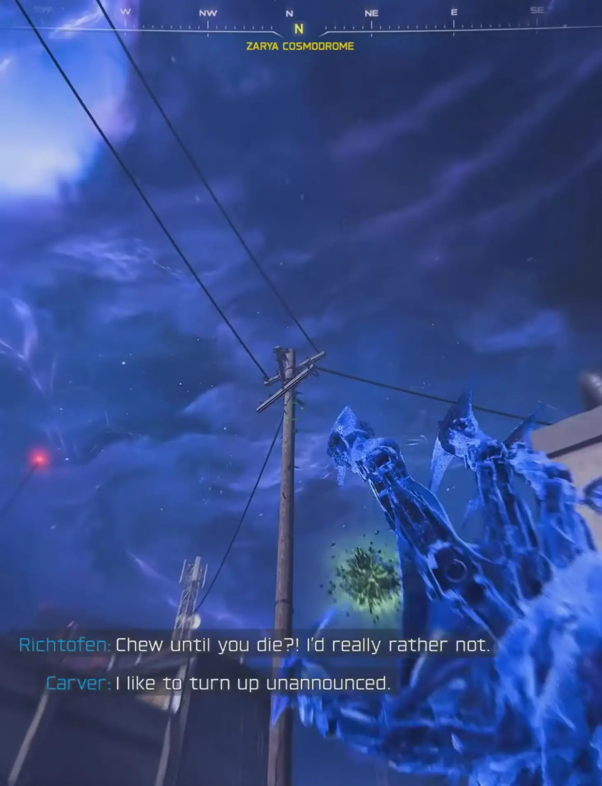
Zarya CosmoDrone Support Systems (Systemy wsparcia): Na górze metalowej skrzyni.
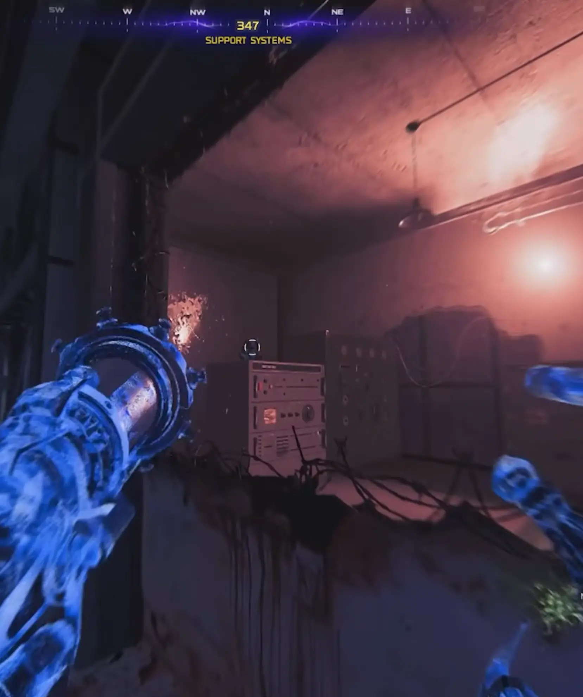
Exit 115 (Wymagana Runda 20+): Na samej górze wielkiego szyldu przy drodze.
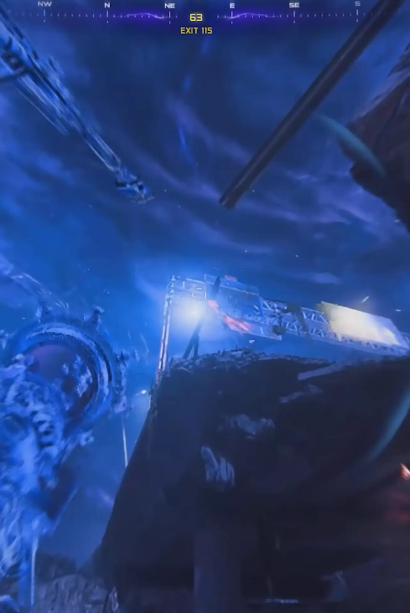
KROK 3: Próba:
Po poprawnym ukończeniu trzech sekwencji obok Was pojawi się portal.
UWAGA: Zanim wejdziecie, musicie mieć Karabin snajperski. W tym wyzwaniu tylko ta broń zadaje obrażenia!
Polecam ulepszyć snajperkę Ion w maszynie Pack-a-Punch – znajdziecie ją naprzeciwko samej maszyny ulepszającej P&P.
KROK 4: Przetrwanie Fal
Gdy zbierzesz wszystkie 10 sztuk, udaj się na Van Dorn Farm. Pojawi się tam zielony portal.
Zasady Próby: Musisz przetrwać 4 fale zombie.
Kłątwa Punktów: Każdy jeden strzał z Twojej broni kosztuje Cię 100 Esencja/Punkty.
Jeśli Twoje punkty spadną do zera, zaczniesz otrzymywać obrażenia i zginiesz!
Strategia na przetrwanie:
Przed wejściem uzbieraj ogromną ilość punktów (tonę!).
Używaj strzelb (Shotguns) zamiast broni automatycznej, aby nie „wystrzelać” się z punktów zbyt szybko.
W ostatniej fali skup się na wyeliminowaniu HVTs (Cele o wysokiej wartości – bossowie), aby zakończyć trial.
NAGRODA: Relikt Miś Tedd
Co on robi?
EFEKT: Skraca czas oczekiwania między rundami o 75%. To oznacza niemal nieustanną akcję i brak przerw na oddech.
Idealne dla tych, którzy chcą szybko wbijać wysokie rundy, ale pamiętajcie – mrok nie wybacza błędów!